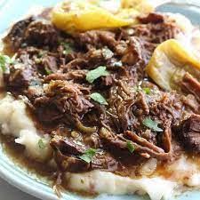

Mississippi Pot Roast
Best thing to have simmering on a cold winter morning!

Ingredients
- 1 chuck roast
- packet ranch dressing mix
- 1 packet au jus gravy mix
- 1/4 cup butter
- 4-5 pepperconi peppers
Directions
- Place roast in the slow cooker and sprinkle the top woth ranch dressing mix and au jus gravy mix. Place peppers on top of the mixes, and add butter
- Cook over low heat for heat for 8 hours. Serve with noodles rice or mashed potatoes. Enjoy!